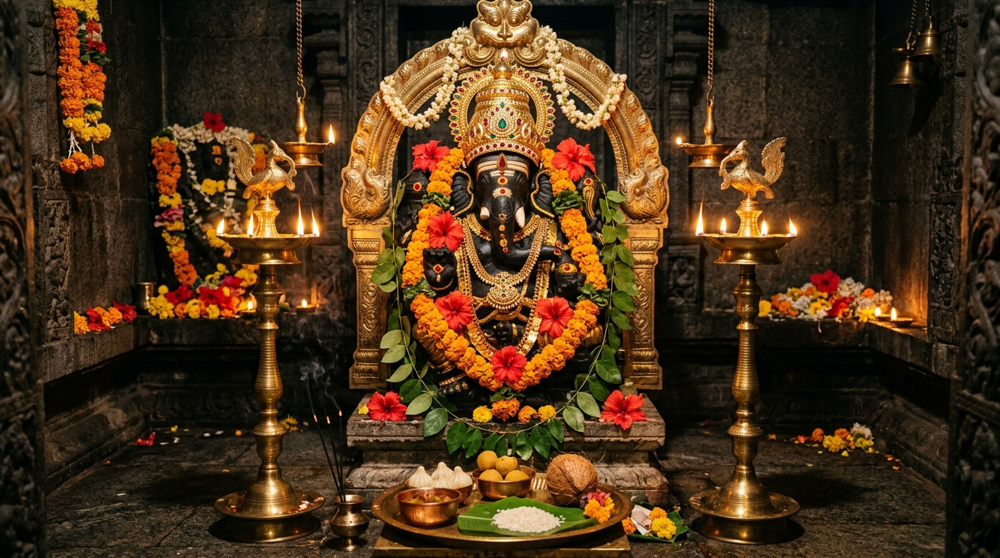

Central DeityLord Sri Ganesha (Central Deity)
वक्रतुण्ड महाकाय सूर्यकोटि समप्रभ
Significance:
The remover of obstacles (Vighnaharta) and patron of letters, arts, and sciences. Lord Ganesha represents auspicious new beginnings, making Him the central anchor of our Ross Creek site.
Key Rituals:
Monthly Sankatahara Chaturthi Pooja, Ganapathi Homam, Pradosham services, Modak offerings, and annual Ganesh Utsav festival bringing regional communities together.
Shrine Construction Plans:
Sponsor Ganesha Altar Granite Block ↗
Moolasthanam (main sanctum sanctorum) crafted in high-quality traditional granite blocks by master sculptors from Tamil Nadu and Karnataka.